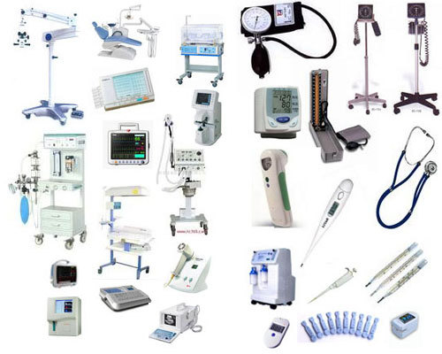

What We Do
We construct medical clinics in rural areas within a 20km radius, equipped with WHO-recommended medical equipment to provide essential healthcare services.

Tele-Health Services
Our telehealth system connects rural patients with urban medical professionals, facilitating remote consultations and enhancing access to specialized care.

Community clinics
We establish and equip fully functional clinics in rural communities lacking healthcare facilities. These clinics are designed to provide essential medical services and improve overall health outcomes.

Medical Equipments
For existing clinics, we offer crucial medical equipment on a rent-to-own basis, enabling them to deliver high-quality medical care without the upfront cost